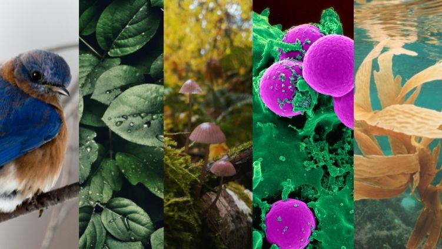
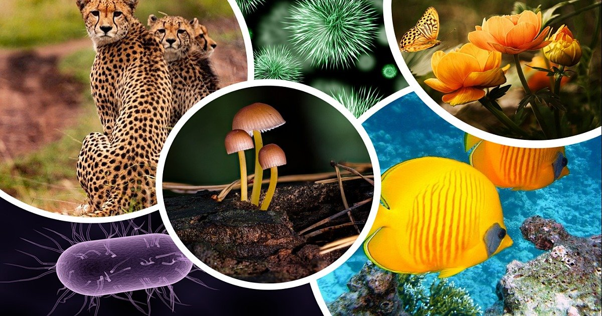
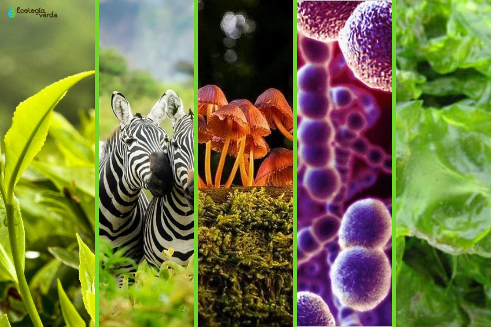

El reino vegetal es uno de los cinco reinos en que se clasifican los seres vivos y comprende todas las plantas. Las plantas son organismos eucariotas, multicelulares, autótrofos y con pared celular. Se reproducen de forma sexual o asexual y realizan la fotosíntesis para obtener energía. El reino vegetal se divide en dos grandes grupos: las briofitas y las plantas vasculares. Las briofitas son plantas que no tienen tejidos vasculares ni órganos verdaderos. Las plantas vasculares son plantas que tienen tejidos vasculares especializados para transportar el agua y las sustancias nutritivas. Dentro de las plantas vasculares hay cuatro divisiones: pteridófitos, gimnospermas, angiospermas y antófitas. Los pteridófitos son plantas que tienen hojas, tallos y raíces, pero no producen semillas. Los gimnospermas son plantas que producen semillas desnudas, es decir, sin fruto. Los angiospermas son plantas que producen semillas dentro de un fruto.

Animal
El reino animal o Animalia es uno de los cinco reinos en que se clasifican los seres vivos. Los animales son organismos eucariotas, multicelulares, heterótrofos y con capacidad de movimiento. El reino animal se divide en dos grandes grupos: los vertebrados y los invertebrados, según tengan o no un esqueleto interno con columna vertebral. Dentro de cada grupo hay varias clases, como mamíferos, aves, reptiles, anfibios, peces, insectos, arácnidos, moluscos, etc. Los animales se adaptan a los diferentes ecosistemas y hábitats del planeta, y tienen una gran diversidad de formas, tamaños, colores y comportamientos. Algunos ejemplos de animales son el perro, el gato, el león, el águila, la serpiente, la rana, el tiburón, la mariposa, la araña, el caracol, etc

Fungi
Los hongos son organismos eucariotas que se alimentan por absorción y se reproducen por esporas. Tienen paredes celulares de quitina y no se mueven por sí mismos. Hay diferentes tipos de hongos según su forma de vida, su reproducción y su nutrición, como los zigomicetos, los ascomicetos, los basidiomicetos y los deuteromicetos. Los hongos son importantes para el equilibrio del ecosistema y la vida humana, ya que descomponen la materia orgánica, forman asociaciones simbióticas con plantas, animales y otros hongos, producen sustancias útiles para la industria, la medicina y la alimentación, y causan enfermedades en plantas, animales y humanos. Si quieres saber más sobre el reino fungi

Protista
Los protistas son organismos eucariotas que no se clasifican como animales, plantas ni hongos. Algunos son unicelulares y otros son pluricelulares simples, sin formar tejidos. Pueden tener formas de nutrición autótrofa (que producen su propio alimento) o heterótrofa (que se alimentan de otros organismos). Se clasifican en cinco supergrupos según su estructura celular, su forma de vida y su relación evolutiva: arqueplastidos, cromalveolados, excavados, amoebozoos y opistocontos. Los protistas son importantes para el equilibrio del ecosistema y la vida humana, ya que producen oxígeno, forman parte del plancton, participan en ciclos biogeoquímicos, establecen asociaciones simbióticas y causan enfermedades